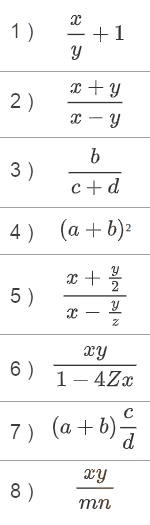

Actividades
Retos
Reto 01
Realiza un programa que evalúe una expresión que contenga literales de los cuatro tipos de datos (booleano, entero, real y carácter) y la muéstralo por pantalla.
Reto 02
En tu entorno de trabajo, crea el programa siguiente. Observa qué pasa exactamente. Entonces, intenta arreglar el problema.
| Java | |
|---|---|
Reto 03
Haz un programa con dos variables que, sin usar ningún literal en ninguna parte excepto para inicializar estas variables, ves estimando e imprimiendo sucesivamente los 5 primeros valores de la tabla de multiplicar del 4. Puedes usar operadores aritméticos y de asignación, si deseas.
Reto 04
Haz dos programas, uno que muestre por pantalla la tabla de multiplicar del 3, y otro, la del 5. Los dos deben ser exactamente iguales, letra por letra, excepto en un único literal dentro de todo el código.
Reto 05
Experimenta qué pasa si en el siguiente programa inicializas la variable realLlarg con un valor con varios decimales. ¿El programa continúa compilando?. ¿Qué resultado da? Después inténtalo asignando un valor superior al rango de los enteros (por ejemplo, 3000000000.0).
Reto 06
Haz un programa que muestre en pantalla de forma tabulada la tabla de verdad de una expresión de disyunción entre dos variables booleanas.
Reto 07
Haz un programa que muestre por pantalla la multiplicación de tres números reales entrados por teclado.
Ejercicios
Ejercicio 01
Probar la E/S elemental: Escribe el pequeño programa que aparece a continuación.
Ejecútalo para ver cómo se comporta el programa.
-
¿Qué ocurre si cuando nos pide un número entero le damos un número real? ¿Y si le damos un carácter no numérico?
-
¿Qué ocurre si eliminamos la instrucción
import java.util.*;
Ejercicio 02
Averigua mediante pruebas:
- ¿Es posible escribir dos instrucciones en la misma línea de un programa?
- ¿Se puede "romper" una instrucción entre varias líneas?
- Algunos lenguajes de programación dan un valor por defecto a las variables cuando las declaramos sin inicializarlas. Otros no permiten usar el contenido de una variable que no haya sido previamente inicializada. ¿Cuál es comportamiento de Java?
Ejercicio 03
¿Cuáles de los siguientes identificadores son válidos y cuales no? Pruébalos cuando tengas duda:
nMiProblemaMiJuegoMi JuegoIntJose&CoA b1rApellidoaaaaaaaaaaaaNombre_ApellidosSaldo-actualUniversidad AlicanteJuan=RubioEdad5_5Java
Ejercicio 04
Escribir un programa que lea un entero desde teclado, lo multiplique por 2, y a continuación escribe el resultado en la pantalla:
Ejemplo de ejecución:
Ejercicio 05 Intercambio
Escribir un programa que …
- Lea desde teclado dos valores enteros. Llama a las variables v1 y v2.
- Muestra los valores introducidos por el usuario.
- Intercambia el valor de v1 y v2 (v1 pasa a valer lo que valía v2 y viceversa).
- Muestra de nuevo los valores, ahora con su valor intercambiado.
Ejemplo de ejecución:
| Bash | |
|---|---|
Ejercicio 06
Escribe las siguientes expresiones siguiendo la sintaxis de Java.

Ejercicio 07 Superficie
Escribe un programa que solicite al usuario la longitud y la anchura de una habitación y a continuación muestra su superficie (longitud por anchura).
Ejercicio 08 Medidas
Escribir un programa que convierta una medida dada en pies a sus equivalentes en yardas, pulgadas, centímetros y metros, sabiendo que 1 pie = 12 pulgadas, 1 yarda = 3 pies, 1 pulgada = 2.54 cm, 1 m = 100 cm.
Ejercicio 09 Segundos
Escribir un programa que, dada una cantidad de segundos, introducida por teclado, la desglose en días, horas, minutos y segundos.
Ejemplo de ejecución:
| Bash | |
|---|---|
Ejercicio 10 Fuerza
La fuerza de atracción entre dos masas m1 y m2 separadas por una distancia d, está dada por la fórmula:
donde G es la constante de gravitación universal G= 6.693 · 10 ^(–11).
Escribir un programa que lea la masa de dos cuerpos y la distancia entre ellos y a continuación obtenga su fuerza de atracción.
Ejercicio 11 Circulo
Escribir un programa que calcule la longitud de la circunferencia y el área del círculo para un valor del radio introducido por teclado.
Ejercicio 12 Dados
Escribir un programa que simula el lanzamiento de dos dados.
Ejercicio 13 UltimaCifra
Escribir un programa que muestre la última cifra de un número entero que introduce el usuario por teclado. Pista: ¿Qué devuelve a%10 ?
| Text Only | |
|---|---|
1 2 | |
Ejercicio 14 PenultimaCifra
Escribir un programa que muestre la penúltima cifra de un número entero que introduce el usuario por teclado.
| Text Only | |
|---|---|
1 2 | |
Una vez hayas comprobado que el programa funciona correctamente, prueba qué ocurre si el usuario introduce un valor de una sola cifra (por ejemplo 4). Explica el resultado mostrado por el programa.
Ejercicio 15 Redondear1
Math.round(x) redondea x de manera que este queda sin decimales. (Math.round(35.5289) da como resultado 36)
Trata de escribir un programa en el que el usuario introduzca un número real y a continuación se muestre redondeado a un solo decimal. Pista : combinar productos, divisiones y Math.round()
Ejemplo de ejecución:
Ejercicio 16
Cuál es el valor resultante de dada una de las siguientes expresiones
5 * 4 – 3 * 64 * 5 * 2(24 + 2 * 6) / 48 / 2 / 2 * 53 + 4 * (8 * (4 – (9 + 3) / 6 ))4 * 3 * 5 + 8 * 4 * 24 – 40 % 54 * 3 / 24 / 2 * 3213 /100
Ejercicio 17
La famosa ecuación de Einstein para la conversión de una masa m en energía viene dada por la fórmula E=mc^2^, donde c es la velocidad de la luz que vale 2.997925 · 10^8^ m/s. Escribir un programa que lea el valor de la masa y obtenga la energía correspondiente según la anterior fórmula.
Ejercicio 18
Indica cuales serán los valores de las variables después de ejecutar cada uno de los siguientes fragmentos de código. Resuelve el ejercicio sin escribir los programas correspondientes y probarlos.
prueba 1
prueba 2 prueba 3 sh
int a, b=5;
b++;
++b;
a= b+1;
prueba 5
sh
int a = 5,b;
b = ++a;
prueba 7
sh
int a=2, b=3;
b-=a;
a=-b;
prueba 9
sh
int a=2,b=3,c=4;
a = --b + c++;
b+=a;
| Text Only | |
|---|---|
Expresiones lógicas
Sean 4 variables enteras
| Java | |
|---|---|
que contienen respectivamente la edad de Miguel, Julio, Pablo y Vicente.
Expresar las siguientes afirmaciones utilizando operadores lógicos y relacionales
Ejemplo: Miguel es mayor de edad.
Solución: m >= 18
- Miguel es menor de edad.
- Miguel es mayor que Julio
- Miguel es el más viejo.
- Miguel es el más joven.
- Miguel no es el más joven.
- Miguel no es el más viejo.
- Alguno de ellos es mayor de edad.
- Miguel y Julio son los más jóvenes.
- Entre todos tienen más de 100 años.
- Entre Miguel y Julio suman más edad que Pablo.
- Entre Miguel y Julio suman más edad que Pablo y Vicente juntos.
- Si los ordenamos por edades de menor a mayor, Julio es el segundo.
- Si los ordenamos por edades de menor a mayor, Julio es el segundo y Pablo el tercero.
- Al menos uno de ellos es menor de edad.
- Al menos dos de ellos son menores de edad.
- Todos son menores de edad.
- Solo dos de ellos son menores de edad.
- Al menos dos de ellos nacieron el mismo año.
- Solo dos de ellos nacieron el mismo año.
- Al menos uno de ellos es menor que Julio
- Solo uno de ellos es menor que Julio
- Miguel es mayor de edad y alguno de los otros es menor de edad.
Actividades
Actividad 01
Realiza un conversor de euros a pesetas. La cantidad de euros que se quiere convertir debe ser introducida por teclado.
Actividad 02
Realiza un conversor de pesetas a euros. La cantidad de pesetas que se quiere convertir debe ser introducida por teclado.
Actividad 03
Escribe un programa que calcule el área de un rectángulo ( area = base * altura ).
Actividad 04
Escribe un programa que calcule el área de un triángulo ( area = (base * altura) / 2 ).
Actividad 05
Escribe un programa que calcule el salario semanal de un empleado en base a las horas trabajadas, a razón de 12 euros la hora.
Actividad 06
Realiza un conversor de MiB a KiB ( Ayuda ).
Actividad 07
Realiza un conversor de Kib a Mib ( Ayuda ).
Actividad 08
Realiza un programa en Java que genere letras de forma aleatoria.
Actividad 09
Realiza un programa en Java que genere el número premiado del Cupón de la ONCE.
Actividad 10
Modificar el siguiente programa para que compile y funcione:
| Java | |
|---|---|
Actividad 11
Modificar el siguiente programa para que compile y funcione:
| Java | |
|---|---|
Actividad 12
Indicar qué valor devolverá la ejecución del siguiente programa:
| Java | |
|---|---|
Actividad 13
Indicar qué valor devolverá la ejecución del siguiente programa:
| Java | |
|---|---|
Actividad 14
Realizar un programa que muestre por pantalla respetando los saltos de carro el siguiente texto (con un solo println):
Actividad 15
Realiza un programa en Java que tenga las variables edad, nivel de estudios e ingresos y almacene en una variable llamada jasp el valor verdadero si la edad es menor o igual a 28 y el nivel de estudios es mayor a 3, o bien la edad es menor de 30 y los ingresos superiores a 28000. En caso contrario almacenar el valor falso.
Actividad 16
Realizar un programa que calcule el precio de un producto teniendo en cuenta que el producto vale 120 €, tiene un descuento del 15% y el IVA que se le aplica es del 21%.
Actividad 17
Realiza un programa que calcule la nota que hace falta sacar en el segundo examen de la asignatura Programación para obtener la media deseada. Hay que tener en cuenta que la nota del primer examen cuenta el 40% y la del segundo examen un 60%.
Ejemplo 1:
| Bash | |
|---|---|
Ejemplo 2:
| Bash | |
|---|---|
Actividad 18
Realizar un programa que dado un importe en euros nos indique el mínimo número de billetes y la cantidad sobrante de euros. Debes usar el operador condicional ?: